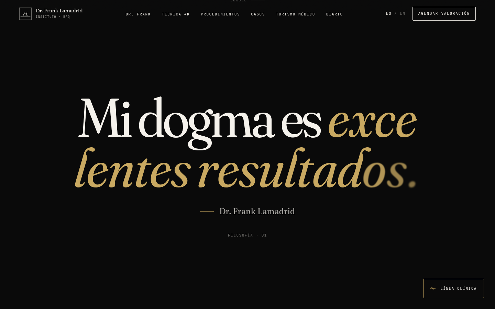

03.1 · La frase como arquitectura
Su dogma ocupa la pantalla entera.
“Mi dogma es excelentes resultados” no se esconde en un párrafo. Aparece sola, a escala de cartel, revelándose letra a letra mientras se baja. Es el primer momento en que el visitante entiende que no está en un catálogo.
